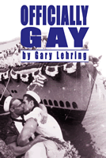

How the military defined homosexuality and the ways that shaped the gay and lesbian identity and movements
How the military defined homosexuality and the ways that shaped the gay and lesbian identity and movements


 How the military defined homosexuality and the ways that shaped the gay and lesbian identity and movements
How the military defined homosexuality and the ways that shaped the gay and lesbian identity and movements

|  |
Officially GayThe Political Construction of Sexuality by the U.S. MilitaryGary L. Lehringpaper EAN: 978-1-59213-035-1 (ISBN: 1-59213-035-6) |
"Lehring has done an excellent job in positioning his argument in the current post-September 11th cultural/political/legal context. His gritty case studies enliven the analytical points he makes. Officially Gay is a book that is interesting and valuable to several fields—law and society, gay and lesbian studies, gender studies, and public policy studies."
—Cynthia Enloe, author of Maneuvers: The International Politics of Militarizing Women's Lives
In 1993, simply the idea that lesbians and gays should be able to serve openly in the military created a firestorm of protest from right-wing groups and powerful social conservatives that threatened to derail the entire agenda of a newly elected President. Nine short years later, in the wake of September 11, 2001, the Pentagon's suspension of discharge of gay and lesbians went largely overlooked and unremarked by political pundits, news organizations, military experts, religious leaders and gay activists. How can this collective cultural silence be explained?
Officially Gay follows the military's century-long attempt to identify and exclude gays and lesbians. It traces how the military historically constructed definitions of homosexual identity relying upon religious, medical, and psychological discourses that defined homosexuals as evil, degenerate, and unstable, making their risk to national security obvious, and mandating their exclusion from the Armed Services.
Officially Gay argues that this process made possible greater regulation and scrutiny of gays and lesbians both in and out of the military while simultaneously helping to create a gay and lesbian political movement and helped shape the direction that movement would take.
Excerpt available at www.temple.edu/tempress
"Officially Gay turns philosophies and policies into clear, provocative accounts of movement ideas and personal lives. Lehring taps thinkers like Arendt and Foucault to analyze military policy, medical research, Congressional testimony, news reporting, legal analysis, and more. This is a telling contribution from political theory to public policy and practical politics."
—John Nelson, Professor in Political Science and the Project on Rhetoric of Inquiry at the University of Iowa
"Lehring's examination of discharge cases is fascinating."
—Choice
"[It] makes a unique and important contribution to the growing body of literature concerning the debate on the US military's ban on homosexuality...the strength of his book lies in his demonstration of how sociopolitical attitudes and values are translated into laws and policy."
—The Women's Review of Books
"In this impassioned treatise, Lehring argues that military policies towards gays and lesbians have played a major role in the creation of what he terms an 'official' gay identity—namely, 'who and what lesbians and gay men are.' The opportunity to defend one's country is a hallmark of citizenship, explains Lehring; thus, an individual who is deemed unfit for military service based on his sexual orientation is, in many ways, stripped of some of his rights and privileges as an American."
—Publishers Weekly
"This book represents an important contribution to the disciplinary study of gay and lesbian politics.... Lehring's compelling treatment of the military policy chapters (which form the core of the book) make this recommended reading for students of minority politics, public policy, and gender and sexuality studies."
—Political Science Quarterly
Acknowledgments
Introduction
1. What Is an Official Gay Identity?
2. The Emergence of Identity: Epistemological Tenets of the Modern Gay and Lesbian Subject
3. Gays in the Military: Constructing the "Homosexual" Other
4. Gays in the Military: Identity as "Official" Justification for Exclusion
5. Gaze in the Military: Competing Perceptions of Gay Performance
6. Don't Kiss and Tell in the Military: Gay Politics and the Clinton Compromise
7. Becoming Identity: Public Policy, Gay Identification, and the "Queer" Response
Conclusion: Nightmares, Fantasies, and Sexual Performance
Notes
Index
 | Gary L. Lehring is Associate Professor of Government at Smith College. |
Sexuality Studies/Sexual Identity
Political Science and Public Policy
Gender Studies
Queer Politics, Queer Theories, edited by Craig Rimmerman.
The last ten years have seen the growth of rich research in the politics of sexuality. Queer Politics, Queer Theories, edited by Craig Rimmerman, aims at developing this research both within and across disciplines. The series will focus on politics in the broadest sense: not only state- and government-oriented studies, but also community politics and the internal politics of new social movements. Such work may originate in political science, sociology, economics, American studies, philosophy, law, history, or anthropology. The series will be defined not by particular academic disciplines but by the questions raised in it. The keys are a concern for the play of power and meaning in discussions of sexuality, and/or a reading of the role of sexuality and sexual identities in conceptions of social and political studies or in our common life.
© 2015 Temple University. All Rights Reserved. This page: http://www.temple.edu/tempress/titles/1270_reg.html.